본 포스트는 Youngwoon Lee 교수님의 Deep Reinforcement Learning 강의 자료 중 Lecture 07-1 — Model-based RL (총 30장)을 바탕으로, 강의를 처음 듣는 독자도 논리적 흐름을 따라갈 수 있도록 재구성한 것입니다. 원본 슬라이드는 영문으로 작성되어 있으며, 본문의 대섹션은 슬라이드 제목을 그대로 차용했습니다. 이 데크는 표지와 같은 형식의 장 구분 슬라이드 두 장(8쪽 Model-based planning, 24쪽 Model-based policy optimization)으로 부분이 나뉘는데, 이들은 본문 대섹션으로 두지 않고 해당 부분이 시작되는 절의 도입부에서 언급했습니다. 같은 형식으로 문장 하나만 실린 16쪽(All these methods assume that we know “model”. But, in practice, we DON’T)도 바로 뒤 절의 도입부로 옮겼습니다. 같은 제목이 이어지는 슬라이드(What if we know the model? 5–6쪽, Optimize over actions using model 11–12쪽, Approach 2: Sampling-based optimization 14–15쪽, Model-based policy optimization 25–27쪽)는 하나의 절로 묶었고, 16–18쪽을 사이에 두고 다시 나오는 19쪽의 Approach 2: Sampling-based optimization은 원본의 순서를 지키기 위해 별도의 절로 두었습니다. 10쪽 하단에 달린 그림 출처는 해당 절의 본문에 옮겨 두었습니다. 본문의 대섹션 번호는 원본 슬라이드에 없는 것을 읽기 편하도록 붙인 것입니다.
한 줄 요약 (TL;DR)
“모형 기반 강화학습은 환경의 전이 확률을 알거나 배워서, 머릿속에서 미리 굴려 본 결과로 행동을 고르거나(계획) 정책 학습용 데이터를 지어냅니다(정책 최적화).”
9회차까지의 알고리즘은 환경과 직접 상호작용하든 남이 모은 데이터를 쓰든,
env.step(a)안에서 무슨 일이 일어나는지는 모른 채 그 결과만으로 학습했습니다. 이번 회차는 그 안쪽, 곧 모형 \(p(\mathbf{s}', r \mid \mathbf{s}, \mathbf{a})\)를 손에 쥐면 무엇이 가능해지는지를 묻습니다. 모형을 안다면 행동 시퀀스를 역전파(경사 기반)나 샘플링(random shooting, CEM)으로 최적화해 계획할 수 있습니다. 모형을 모르면 \((\mathbf{s}, \mathbf{a}, \mathbf{s}')\) 데이터로 지도학습하면 되지만, 무작위 정책이 모은 데이터로 배운 모형은 계획기가 찾아가는 상태에서 틀리므로(분포 불일치), 계획한 행동을 실행해 데이터를 다시 모으고, 첫 행동만 실행한 뒤 매 스텝 다시 계획하는 MPC로 모형 오차를 바로잡습니다. 그래도 계획은 시험 시간에 계산이 비싸고 짧은 지평에서만 실용적이므로, 강의는 마지막으로 실제 데이터의 모든 상태에서 짧은 모형 롤아웃을 만들어 모형 없는 알고리즘의 학습 데이터를 늘리는 모형 기반 정책 최적화로 넘어갑니다.
1. 오늘의 계획 (Plan for Today)
9회차가 상호작용 없이 정해진 데이터만으로 학습하는 문제를 다루었다면, 이번 회차는 상호작용 그 자체를 흉내 내는 모형을 손에 넣었을 때 무엇을 할 수 있는지를 다룹니다. 계획 슬라이드의 세 줄은 다음과 같습니다.
- Model-based RL (진하게 강조된 첫 줄)
- Model-based planning
- Model-based policy optimization
첫 줄이 “모형이란 무엇이고, 알면 무엇을 할 수 있는가”라는 문제 설정이고, 나머지 두 줄은 모형을 쓰는 두 가지 방식입니다. 본문과의 대응은 다음과 같습니다.
| 항목 | 슬라이드 | 본문 | 묻는 것 |
|---|---|---|---|
| Model-based RL | 3–7쪽 | 2–5절 | 모형이란 무엇이고, 알면 무엇을 할 수 있는가 |
| Model-based planning (모형을 알 때) | 8–15쪽 | 6–10절 | 모형으로 행동 시퀀스를 어떻게 최적화하는가 |
| Model-based planning (모형을 배울 때) | 16–23쪽 | 11–17절 | 배운 모형으로 계획하면 무엇이 잘못되고, 어떻게 고치는가 |
| Model-based policy optimization | 24–28쪽 | 18–19절 | 모형으로 정책을 학습할 수 있는가, 모형은 언제 쓰는가 |
| (요약) | 29–30쪽 | 20–21절 | 요약과 다음 시간 |
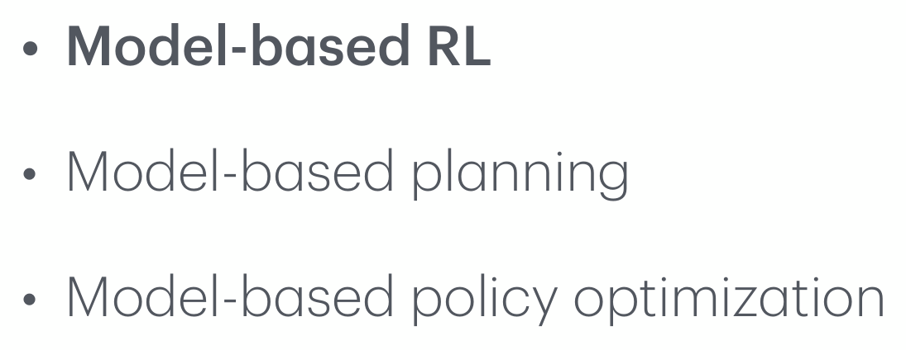
2. 모형 기반 강화학습에서 “모형”이란 무엇인가 (What Is “Model” in Model-Based RL?)
슬라이드는 제목 바로 아래에 주황 글씨로 “≠ Neural network model”이라고 못 박습니다. 딥러닝에서 “모델”은 보통 학습하는 신경망을 가리키지만, 모형 기반 강화학습의 “모형(model)”은 그것이 아닙니다.
앞 회차들에서 써 온 에이전트–환경 고리를 다시 보겠습니다.
- 에이전트는 정책 \(\pi(\mathbf{a}_t \mid \mathbf{s}_t)\)에 따라 상태 \(\mathbf{s}_t\)에서 행동 \(\mathbf{a}_t\)를 고릅니다.
- 환경은 그 행동을 받아 보상 \(r_t\)와 다음 상태 \(\mathbf{s}_{t+1}\)을 돌려줍니다.
환경이 이 둘을 돌려주는 규칙은 두 개의 조건부 분포로 쓸 수 있습니다.
\[ p(r_t \mid \mathbf{s}_t, \mathbf{a}_t), \qquad p(\mathbf{s}_{t+1} \mid \mathbf{s}_t, \mathbf{a}_t) \]
슬라이드는 이 두 분포를 초록 타원으로 감싸고, 그것을 부르는 네 가지 이름을 나란히 적습니다 — 모형(model), 전이 확률(transition probability), 동역학(dynamics), 세계(world). 모두 같은 대상입니다. 모형 기반 강화학습(model-based RL)이란 이 환경의 규칙을 알거나 배워서 활용하는 강화학습이고, 지금까지 다룬 정책 경사·행위자–비평가·PPO·DQN·SAC 같은 알고리즘은 이 규칙을 명시적으로 쓰지 않는 모형 없는(model-free) 방법이었습니다.
“모형 없는(model-free)”이라는 말 때문에 앞 회차의 알고리즘에는 “모델”이 전혀 없다고 오해하기 쉽지만, 그 알고리즘들도 정책과 가치 함수를 신경망 모델로 표현했습니다. 모형 없는 방법과 모형 기반 방법을 가르는 기준은 신경망의 유무가 아니라, 환경의 전이 확률을 따로 표현해서 쓰는가입니다. 이번 회차에서 신경망은 오히려 그 전이 확률을 근사하는 도구로 등장합니다(11절).
슬라이드 오른쪽은 실제 로봇이 바나나를 통에 던져 넣는 과제를 예로 들어 각 기호의 뜻을 짚습니다.
| 기호 | 바나나 던지기 과제에서의 의미 |
|---|---|
| \(\mathbf{s}_t\) | 로봇과 바나나의 자세(pose) |
| \(\mathbf{a}_t\) | 로봇의 관절 제어 |
| \(\mathbf{s}_{t+1}\) | 로봇이 움직인 뒤의 로봇과 바나나의 자세 |
| \(r_t\) | 바나나가 통(bucket)에 들어가면 \(+1\) |
| \(p(\mathbf{s}_{t+1} \mid \mathbf{s}_t, \mathbf{a}_t)\) | 실제 세계의 물리 법칙 — 알려져 있지 않음(unknown) |
마지막 줄의 “unknown”에 밑줄이 그어져 있습니다. 바나나처럼 모양이 불규칙한 물체가 손을 떠난 뒤 어떻게 날아갈지를 정확히 적은 식은 우리에게 없습니다. 이 사실이 다음 절의 주제입니다.
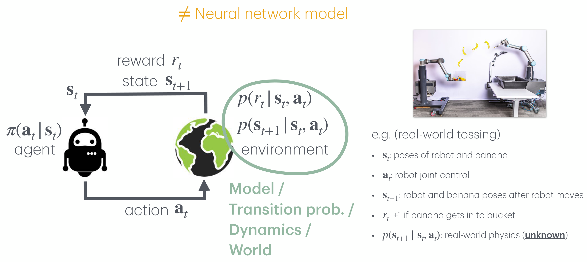
3. 모형은 대개 에이전트가 모른다 (Model Is Mostly Unknown for Agent)
시뮬레이터 안에서 학습할 때는 사정이 다르지 않을까요? 슬라이드는 2회차에서도 보았던 Gym 코드 네 줄을 다시 보여 줍니다.
import gym # 슬라이드에는 없는 줄 — 아래 코드를 실행하기 위한 import
env = gym.make("Ant-v4") # 환경을 만든다
s = env.reset() # 초기 상태를 받는다
a = agent(s).sample() # 에이전트(정책)가 행동을 뽑는다 — agent는 학습 중인 정책을 가리키는 자리표시자
s_next, r, done, _ = env.step(a) # 다음 상태·보상·종료 여부를 받는다: 이 안에서 무슨 일이 일어나는지 에이전트는 모른다슬라이드는 마지막 줄의 env.step(a)에 주황 밑줄을 긋고 “에이전트는 env.step(a) 안에서 무슨 일이 일어나는지 모른다!”라고 적습니다(문장의 “does not know”에도 밑줄이 있습니다). (슬라이드의 코드는 step이 값 네 개를 돌려주는 예전 Gym 인터페이스를 따릅니다. 후속 라이브러리인 Gymnasium에서는 reset이 (관측, 정보)를, step이 종료를 terminated와 truncated로 나눈 값 다섯 개를 돌려줍니다.)
Ant-v4의 물리 엔진은 분명 코드로 존재합니다. 그러나 에이전트 입장에서 env.step은 블랙박스입니다. 행동을 넣으면 다음 상태와 보상이라는 표본이 하나 나올 뿐, 그 표본을 만든 분포 \(p(\mathbf{s}' \mid \mathbf{s}, \mathbf{a})\)의 식이나 기울기는 얻을 수 없습니다. 실제 로봇이라면 더 말할 것도 없습니다. 앞 회차의 알고리즘은 모두 이 조건, 곧 표본만 주어지는 조건에서 작동하도록 설계되었습니다.
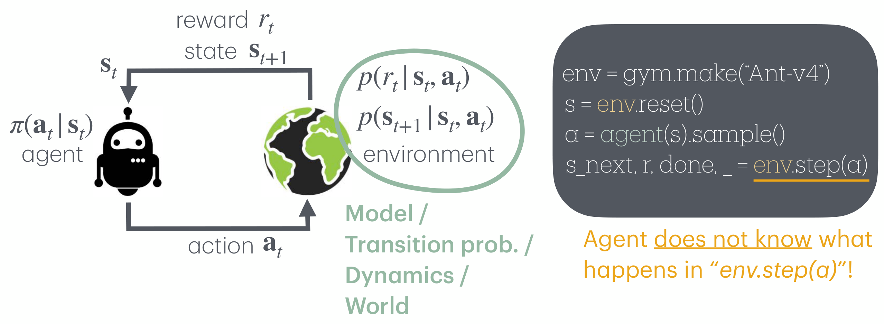
reset으로 초기 상태 받기, 에이전트에서 행동 뽑기, step으로 다음 상태·보상·종료 여부 받기 — 이 적혀 있고, 그중 둘째·넷째 줄의 env는 연한 주황색, agent는 연한 회녹색으로 칠해져 있으며(첫 줄의 env는 다른 코드처럼 흰색) 마지막 줄의 env.step(a)에 주황 밑줄이 그어져 있습니다. 상자 아래 주황 글씨 “Agent does not know what happens in env.step(a)!”(그중 “does not know”에도 주황 밑줄)는 왼쪽 그림의 초록 타원이 코드에서는 바로 이 함수 호출 안에 숨어 있으며, 에이전트는 그 결과만 받을 뿐 내부 규칙은 모른다는 뜻입니다.4. 모형을 안다면? (What If We Know the Model?)
반대로 모형을 안다고 해 봅시다. 슬라이드의 답은 한 줄입니다 — “궤적을 무한히 시뮬레이션할 수 있다(simulate infinite trajectories).” 실제 환경과 상호작용할 필요 없이, 머릿속에서 원하는 만큼 미래를 굴려 볼 수 있다는 뜻입니다. 이것은 두 가지로 쓰입니다.
- 여러 행동을 시도해 보고 가장 좋은 것을 고른다 (try many actions and pick the best one)
- 상상한 정책 롤아웃(imaginary policy rollout)으로부터 학습한다 (learn from imaginary policy rollouts)
이 두 줄이 각각 1절 계획의 둘째 줄(계획)과 셋째 줄(정책 최적화)에 대응합니다.
4.1 상상 롤아웃
슬라이드 그림에서 지구 모양의 환경 위에 분홍색 뇌가 겹쳐집니다. 환경을 실제로 건드리는 대신, 에이전트가 머릿속에 든 모형으로 환경을 대신한다는 뜻입니다. 뇌에서 나온 화살표는 상상 롤아웃(imaginary rollout) — 현재 상태 \(\mathbf{s}_t\)에서 출발해 모형으로 \(H\)스텝을 시뮬레이션한 것 — 으로 이어집니다.
\[ \mathbf{s}_t \xrightarrow{\;\mathbf{a}_t\;} (\hat{r}_t, \hat{\mathbf{s}}_{t+1}) \xrightarrow{\;\mathbf{a}_{t+1}\;} (\hat{r}_{t+1}, \hat{\mathbf{s}}_{t+2}) \longrightarrow \cdots \xrightarrow{\;\mathbf{a}_{t+H}\;} (\hat{r}_{t+H}, \hat{\mathbf{s}}_{t+H+1}) \]
여기서 모자 기호 \(\hat{\ }\)는 모형이 예측한 값, 곧 실제로 관측한 것이 아니라 상상한 값이라는 표시입니다. 출발점 \(\mathbf{s}_t\)만 실제 상태이고, 그 뒤의 상태와 보상은 모두 모형에서 나옵니다.
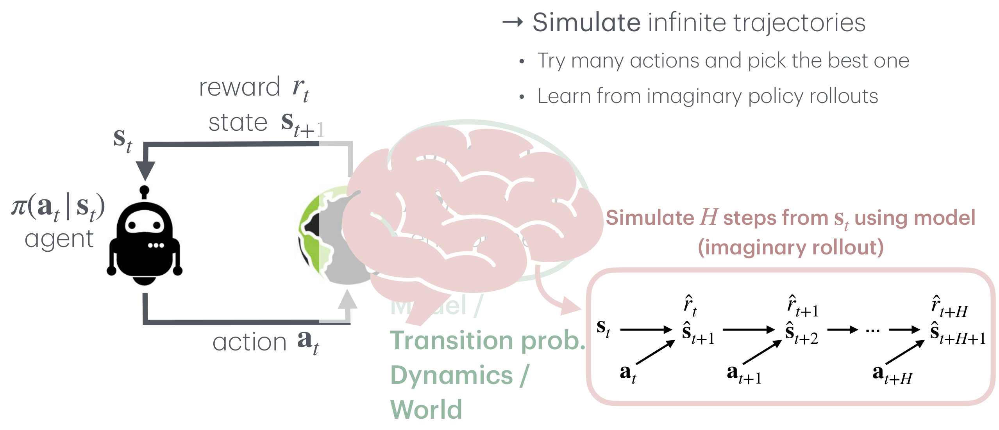
4.2 바나나 던지기 예시
두 번째 슬라이드는 같은 그림의 오른쪽을 2절의 바나나 던지기 예시로 바꿉니다. 모형이 있다면 로봇은 다음과 같이 던질 힘을 정할 수 있습니다.
- 바나나를 던질 힘을 하나 고른다 (choose some force to throw banana)
- 그 결과를 모형으로 상상한다 (imagine the result using model)
- 바나나가 통에 못 미쳐 떨어질 것 같으면 힘을 늘리고, 통을 넘어갈 것 같으면 줄인다
- 알맞은 힘을 찾을 때까지 반복한다
이 과정 전체가 머릿속에서 일어나고, 실제로 바나나를 던지는 것은 알맞은 힘을 찾은 뒤 한 번뿐입니다. 사람이 공을 던지기 전에 궤적을 머릿속으로 그려 보는 것과 같은 일입니다.
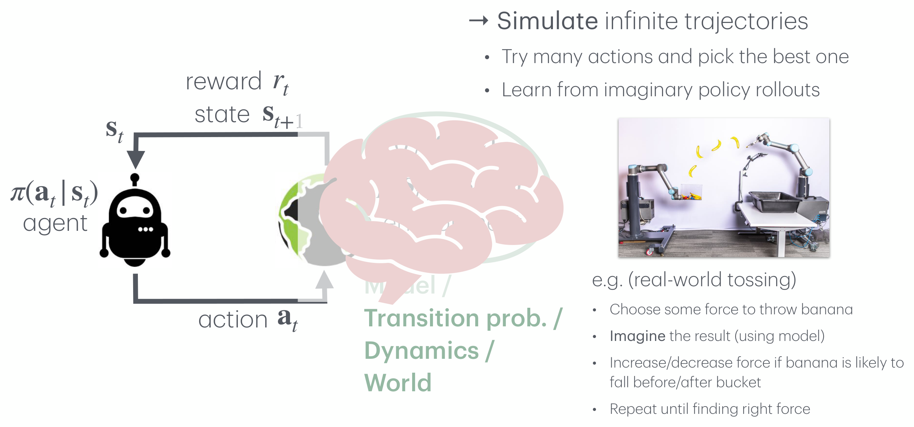
5. 모형 기반 강화학습 (Model-Based Reinforcement Learning)
이제 용어를 정리합니다. 슬라이드는 세계 모형(world model)을 다음과 같이 적습니다.
\[ p(\mathbf{s}', r \mid \mathbf{s}, \mathbf{a}) \qquad \text{또는 흔히} \qquad p(\mathbf{s}' \mid \mathbf{s}, \mathbf{a}) \]
보상까지 함께 예측하는 경우와 다음 상태만 예측하는 경우가 모두 쓰입니다. 뒤의 경우에는 보상 함수 \(r(\mathbf{s}, \mathbf{a})\)를 따로 안다고 두고, 모형이 예측한 상태에 그 함수를 적용해 보상을 계산하게 됩니다. 이 강의의 계획 목적함수(8절 이후)는 보상을 \(r(\mathbf{s}_{t'}, \mathbf{a}_{t'})\)로 적는데, 두 경우 모두에 맞는 표기입니다. 8절처럼 모형이 \(p(\mathbf{s}', r \mid \mathbf{s}, \mathbf{a})\)로 보상까지 예측하면 \(r\)은 모형이 내놓은 보상이고, 11절 이후처럼 다음 상태만 예측하는 \(f_\phi\)를 쓰면 알고 있는 보상 함수를 예측 상태에 적용한 값입니다.
세계 모형을 안다면 그것을 어떻게 쓸 수 있을까요? 슬라이드는 두 가지 답을 제시합니다.
- 계획(planning) 또는 탐색(search): 현재 상태에서 가능한 미래를 모형으로 펼쳐 보고, 좋은 결과로 이어지는 행동을 고릅니다. 왼쪽 그림의 트리에서 X 표시가 붙은 가지는 버리고, \(+10\)의 보상에 닿는 초록 경로를 따라갑니다.
- (상상) 훈련 데이터 생성(generating imaginary training data): 실제 상태 \(\mathbf{s}_0\) 하나만 주어지면, 나머지는 모형으로 지어내 학습 데이터를 만듭니다.
\[ D = \big\{ (\underbrace{\mathbf{s}_0}_{\text{given}},\; \underbrace{\mathbf{a}_0, \hat{r}_0, \hat{\mathbf{s}}_1, \hat{\mathbf{a}}_1, \hat{r}_1, \hat{\mathbf{s}}_2, \ldots}_{\text{imagined}})_i \big\} \]
슬라이드는 \(\mathbf{s}_0\)에 “given”, 그 뒤 전체에 “imagined”라는 주황 표시를 붙입니다. 행동은 정책이 고르고, 보상과 다음 상태는 모형이 예측하며, 이렇게 만든 궤적 여러 개(\(i\)로 색인)가 실제 데이터 대신 정책 학습에 쓰입니다.
두 쓰임의 차이를 정리하면 다음과 같습니다.
| 계획 | 데이터 생성 | |
|---|---|---|
| 모형을 쓰는 때 | 행동을 고를 때마다 | 정책을 학습할 때 |
| 모형이 내놓는 것 | 이번에 실행할 행동 (시퀀스) | 정책 학습에 쓸 상상 궤적 |
| 본문 | 6–17절 (Model-based planning) | 18절 (Model-based policy optimization) |
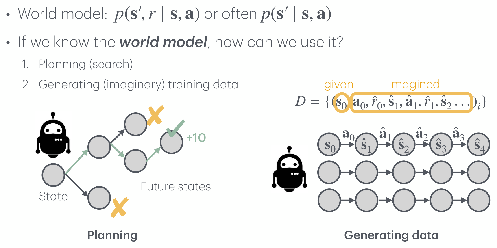
6. 모형 기반 계획 (Model-Based Planning)
장 구분 슬라이드(8쪽) Model-based planning과 함께 첫 번째 쓰임으로 들어갑니다. 슬라이드가 정의하는 과제는 다음과 같습니다.
모형을 이용해, 반환값을 최대화하는 계획 \((\mathbf{a}_1, \mathbf{a}_2, \ldots, \mathbf{a}_H)\)를 찾는다.
여기서 계획(plan)은 정책이 아니라 앞으로 \(H\)스텝 동안 실행할 행동 시퀀스 그 자체입니다. 결정적인 모형 \(\mathbf{s}_{t+1} = f(\mathbf{s}_t, \mathbf{a}_t)\)를 예로 들어 식으로 쓰면 다음과 같습니다.
\[ \max_{\mathbf{a}_1, \ldots, \mathbf{a}_H} \; \sum_{t=1}^{H} r(\mathbf{s}_t, \mathbf{a}_t) \qquad \text{subject to} \qquad \mathbf{s}_{t+1} = f(\mathbf{s}_t, \mathbf{a}_t) \]
제약식이 곧 모형입니다. 모형이 확률적이라면 목적함수는 모형이 만드는 궤적에 대한 기댓값이 됩니다. 슬라이드는 두 예시를 나란히 놓습니다.
| 단계 | 바나나 던지기 | 바둑 |
|---|---|---|
| 후보 고르기 | 바나나를 던질 힘을 하나 고른다 | 수의 시퀀스를 하나 고른다 |
| 상상하기 | 그 결과를 모형으로 상상한다 | 그 결과를 모형으로 상상한다 |
| 반복하기 | 통 앞/뒤에 떨어질 것 같으면 힘을 늘리거나 줄이며, 알맞은 힘을 찾을 때까지 반복한다 | 가장 좋은 수(승률이 가장 높은 수)를 찾을 때까지 반복한다 |
| 실행하기 | 바나나를 던진다 | 돌을 놓는다 |
슬라이드에서 위의 세 단계는 주황색, 마지막 실행 단계만 회색입니다. 주황색 단계는 모두 모형 안에서 일어나고, 실제 세계에 영향을 주는 것은 회색 단계 하나뿐이라는 구분입니다. 바둑은 돌을 놓은 뒤의 판 상태가 규칙으로 정확히 정해지므로 모형을 “안다”고 할 수 있는 대표적인 경우이고, 사진은 AlphaGo와 이세돌 9단의 대국 화면입니다.
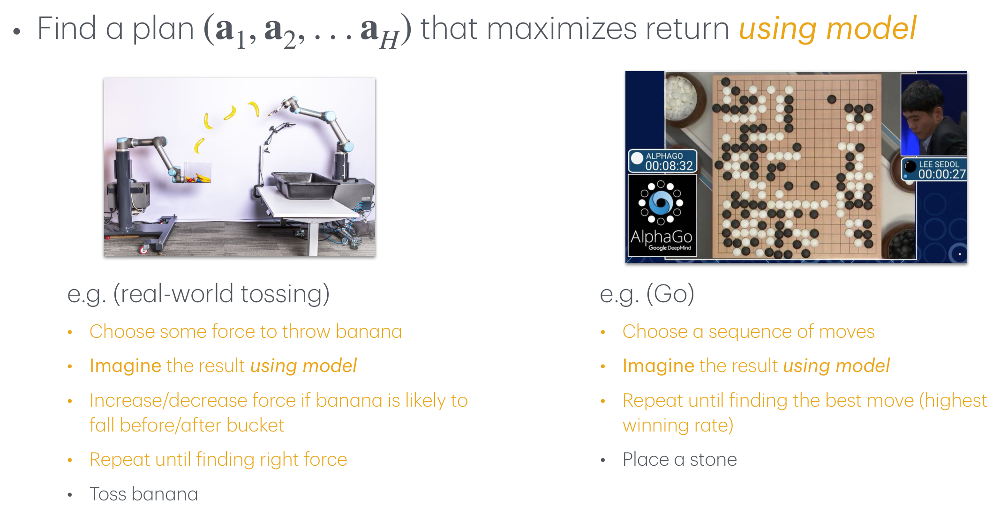
7. 무차별 대입 계획 (Brute-Force Planning)
가장 단순한 계획법은 가능한 모든 계획을 모형으로 상상해 보는 것입니다. 그리고 그것은 극도로 비효율적입니다. 슬라이드는 그 비용을 \(O(N^H)\)로 적습니다.
- 매 스텝 고를 수 있는 행동이 \(N\)개이고 계획의 길이가 \(H\)이면, 서로 다른 행동 시퀀스는 \(N \times N \times \cdots \times N = N^H\)개입니다.
- 시퀀스 하나를 평가하는 데 모형 호출이 \(H\)번 필요하므로, 전체 모형 호출은 \(H \cdot N^H\)번입니다. 지수 항 \(N^H\)가 비용을 지배합니다. 트리에서 앞부분이 같은 시퀀스끼리 롤아웃을 공유하면 호출 수는 \(N + N^2 + \cdots + N^H = O(N^H)\)로 줄어듭니다.
- 예를 들어 \(N = 10\), \(H = 10\)만 되어도 시퀀스는 \(10^{10}\)개입니다. 행동이 연속적이라면 시퀀스는 무한히 많고, 각 차원을 잘게 나누어도 이 지수적 증가를 피할 수 없습니다.
그림은 David Silver의 IJCAI 강연 자료(AlphaGo, http://www0.cs.ucl.ac.uk/staff/d.silver/web/Resources_files/AlphaGo_IJCAI.pdf)에서 가져온 것입니다. 바둑판 하나에서 출발한 게임 트리가 몇 단계만 내려가도 가지가 빽빽하게 뭉개져 회색 띠가 되는 모습이 \(N^H\)의 증가를 그대로 보여 줍니다. 계획을 실제로 쓰려면, 모든 시퀀스를 보지 않고도 좋은 시퀀스를 찾는 최적화가 필요합니다.
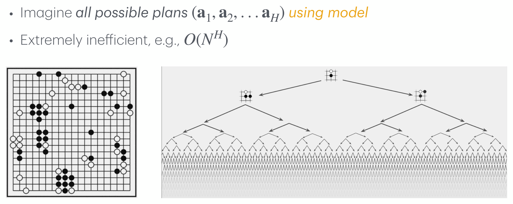
8. 모형을 이용한 행동 최적화 (Optimize over Actions Using Model)
두 슬라이드는 같은 목적함수를 두 가지 방법으로 최적화합니다.
\[ \max_{\mathbf{a}_{t:t+H}} \; \sum_{t'=t}^{t+H} r(\mathbf{s}_{t'}, \mathbf{a}_{t'}) \]
여기서 최적화 변수는 신경망의 가중치가 아니라 행동 시퀀스 \(\mathbf{a}_{t:t+H}\)입니다. 상태 \(\mathbf{s}_t\)는 지금 실제로 놓인 상태로 고정되고, 그 뒤의 상태들은 모형이 행동에 따라 계산해 냅니다. 두 슬라이드 모두 이 계산을 초록 테두리로 감싸고 “모형 롤아웃(model rollout) — 실제 상호작용이 아님”이라고 적습니다.
8.1 접근 1: 역전파 (Approach 1: via Backpropagation)
첫 번째 슬라이드의 전제는 “모형 \(p(\mathbf{s}', r \mid \mathbf{s}, \mathbf{a})\)가 미분 가능하다면”입니다. 그러면 목적함수를 행동에 대해 미분할 수 있고, 경사 기반 최적화(gradient-based optimization)를 쓸 수 있습니다. 슬라이드의 알고리즘은 세 단계입니다.
- 어떤 정책(예: 무작위 정책)을 모형 안에서 \(H\)스텝 롤아웃한다 — 초기 행동 시퀀스를 정하는 단계입니다.
- 목적함수 \(\max_{\mathbf{a}_{t:t+H}} \sum_t r(\mathbf{s}_t, \mathbf{a}_t)\)를 가지고 \(p(\mathbf{s}', r \mid \mathbf{s}, \mathbf{a})\)를 거꾸로 거슬러 역전파한다.
- 경사 상승(gradient ascent)으로 더 나은 \(\mathbf{a}_{t:t+H}\)를 얻는다 — 그리고 2단계로 돌아간다.
슬라이드는 3단계의 \(\mathbf{a}_{t:t+H}\)에 주황 밑줄을 긋고 “이 행동 시퀀스가 우리가 원하는 것이다!”라고 적습니다. 결과물이 정책이 아니라 행동 시퀀스라는 점을 다시 강조한 것입니다.
보충 유도: 행동 시퀀스에 대한 기울기
슬라이드는 2단계를 그림의 분홍 화살표로만 보여 주므로, 결정적이고 미분 가능한 모형 \(\mathbf{s}_{t'+1} = f(\mathbf{s}_{t'}, \mathbf{a}_{t'})\)와 미분 가능한 보상 \(r(\mathbf{s}, \mathbf{a})\)를 가정해 그 기울기를 풀어 보겠습니다. 목적함수를 \(J(\mathbf{a}_{t:t+H}) = \sum_{t'=t}^{t+H} r(\mathbf{s}_{t'}, \mathbf{a}_{t'})\)라 하고, 아래에서 스칼라를 벡터로 미분한 \(\partial r / \partial \mathbf{s}\), \(\partial r / \partial \mathbf{a}\), \(\partial J / \partial \mathbf{a}_k\)와 2단계의 \(\mathbf{g}_{t'}\)는 모두 행벡터로, \(\partial f / \partial \mathbf{s}\)와 \(\partial f / \partial \mathbf{a}\)는 야코비안(Jacobian) 행렬로 둡니다. 4단계의 \(\nabla_{\mathbf{a}_{t:t+H}} J\)는 각 \(k = t, \ldots, t+H\)에 대한 행벡터 \(\partial J / \partial \mathbf{a}_k\)를 전치해 이어 붙인 열벡터입니다.
1단계 (영향 경로). 행동 \(\mathbf{a}_k\)는 두 경로로 \(J\)에 영향을 줍니다. 같은 시점의 보상 \(r(\mathbf{s}_k, \mathbf{a}_k)\)에 직접, 그리고 다음 상태 \(\mathbf{s}_{k+1} = f(\mathbf{s}_k, \mathbf{a}_k)\)를 거쳐 그 뒤의 모든 보상에 간접적으로 영향을 줍니다.
2단계 (뒤에서부터 쌓는 기울기). 상태 \(\mathbf{s}_{t'}\)부터 끝까지의 보상 합을 그 상태로 미분한 것을 \(\mathbf{g}_{t'}\)라 하면, 연쇄 법칙(chain rule)에 의해
\[ \mathbf{g}_{t'} = \frac{\partial r(\mathbf{s}_{t'}, \mathbf{a}_{t'})}{\partial \mathbf{s}_{t'}} + \mathbf{g}_{t'+1}\, \frac{\partial f(\mathbf{s}_{t'}, \mathbf{a}_{t'})}{\partial \mathbf{s}_{t'}}, \qquad \mathbf{g}_{t+H+1} = \mathbf{0} \]
입니다. 마지막 상태 \(\mathbf{s}_{t+H+1}\)에는 목적함수에 들어가는 보상이 없으므로 출발값이 0입니다. (그림에서 \(r_{t'}\)이 \(\mathbf{s}_{t'+1}\) 위에 그려진 것은 모형 \(p(\mathbf{s}', r \mid \mathbf{s}, \mathbf{a})\)가 한 스텝에서 \((\mathbf{s}_{t'}, \mathbf{a}_{t'})\)로부터 다음 상태와 보상을 함께 내놓기 때문이며, 보상 자체는 \((\mathbf{s}_{t'}, \mathbf{a}_{t'})\)의 함수입니다.)
3단계 (행동에 대한 기울기). 1단계의 두 경로를 합치면
\[ \frac{\partial J}{\partial \mathbf{a}_k} = \frac{\partial r(\mathbf{s}_k, \mathbf{a}_k)}{\partial \mathbf{a}_k} + \mathbf{g}_{k+1}\, \frac{\partial f(\mathbf{s}_k, \mathbf{a}_k)}{\partial \mathbf{a}_k} \]
입니다. 2단계의 점화식을 풀어 쓰면 \(\mathbf{g}_{k+1}\) 안에는 \(\dfrac{\partial f}{\partial \mathbf{s}}\)들의 곱이 들어 있고, 이것이 그림에서 각 보상 \(r\)에서 출발한 분홍 화살표가 상태 사슬을 거꾸로 거슬러 각 행동에 닿는 모습입니다. 순환 신경망의 시간 역전파(backpropagation through time)와 같은 계산입니다.
4단계 (갱신). 학습률 \(\eta\)로
\[ \mathbf{a}_{t:t+H} \leftarrow \mathbf{a}_{t:t+H} + \eta\, \nabla_{\mathbf{a}_{t:t+H}} J \]
를 반복합니다. 모형의 가중치는 고정된 채, 기울기가 행동으로만 흘러간다는 점이 지도학습의 역전파와 다릅니다.
3단계의 기울기에는 야코비안 \(\partial f / \partial \mathbf{s}\)의 곱이 길게 들어 있어서, 계획이 길어질수록 기울기가 폭발하거나 사라지기 쉽습니다. 또 접촉이 일어나는 물리처럼 동역학이 매끄럽지 않거나, 보상이 목표에 도달했을 때만 주어지면 기울기가 거의 정보를 주지 못합니다. 9절에서 경사 기반 방법의 단점으로 꼽는 “좋은 최적화 지형이 필요하다”가 이런 상황입니다. 모형이 확률적이라면 표본을 뽑는 과정을 미분 가능하게 바꾸는 장치(예: 7회차의 재매개변수화 기법(reparameterization trick))도 따로 필요합니다.
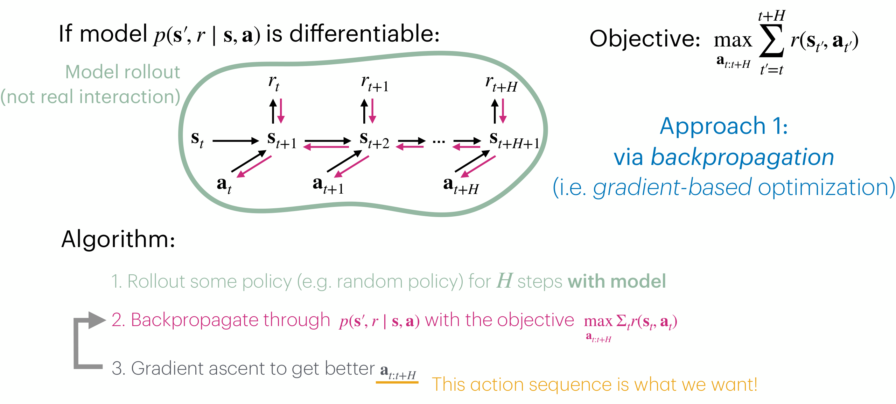
8.2 접근 2: 샘플링 (Approach 2: via Sampling)
두 번째 슬라이드는 같은 그림에서 분홍 화살표를 모두 지웁니다. 경사를 쓰지 않는 경사 없는 최적화(gradient-free optimization)이기 때문입니다. 알고리즘은 두 단계의 반복입니다.
- 모형으로 \(H\)스텝 행동 시퀀스를 샘플링한다 (sample \(H\)-step action sequences with model)
- 그중 가장 좋은 행동 시퀀스를 기억한다 — 목적함수 \(\sum_{t'} r(\mathbf{s}_{t'}, \mathbf{a}_{t'})\)가 가장 큰 것
모형은 각 시퀀스를 평가할 때(그 시퀀스를 넣고 롤아웃해 보상 합을 계산할 때)만 쓰이므로, 미분 가능할 필요가 없습니다. 슬라이드는 1단계의 “Sample \(H\)-step action sequences”에 주황 밑줄을 긋고 질문을 남깁니다 — “행동 시퀀스를 어떻게 샘플링하는가?” 10절이 답합니다.
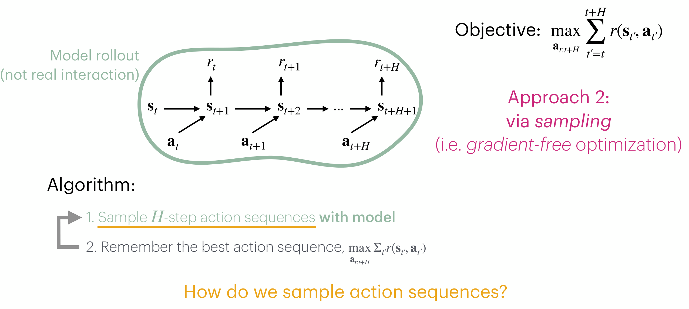
9. 경사 기반 대 샘플링 기반 최적화 (Gradient-Based vs. Sampling-Based Optimization)
두 접근의 성격을 일반적인 최적화 문제로 비교하는 슬라이드입니다. 그래프는 손실 \(L(\theta)\)를 매개변수 \(\theta\)에 대해 최소화하는 그림이지만, 계획에서는 보상 합을 최대화하므로 \(L = -J\)로 읽으면 됩니다.
- 경사 기반(1차, 1st order): 함수값뿐 아니라 1차 도함수(기울기)를 씁니다. 그래프에서 “start from here”라는 한 점에서 출발해, 기울기를 따라 곡선을 타고 내려가 최솟값 근처(빨간 화살표)에 도착합니다.
- 샘플링 기반(0차, 0th order): 함수값만 씁니다. 그래프에서 곡선 위 여러 점(빨간 점)을 평가하고, 그중 가장 낮은 점(빨간 화살표)을 고릅니다.
| 경사 기반 (1차) | 샘플링 기반 (0차) | |
|---|---|---|
| 장점 | 고차원으로 확장 가능하다 | 병렬화할 수 있다 |
| 특히 과매개변수화된(overparametrized) 영역에서 잘 작동한다 | 기울기 정보가 필요 없다 | |
| 단점 | 좋은 최적화 지형(landscape)이 필요하다 | 고차원으로 잘 확장되지 않는다 |
두 열의 장단점은 서로 거울상입니다.
- 기울기는 모든 차원에 대해 한 번에 개선 방향을 알려 주므로 차원이 커져도 한 번의 역전파로 계산됩니다. 그 대신 출발점 근처의 국소 정보만 쓰기 때문에, 지형이 울퉁불퉁하거나 평평하면 엉뚱한 곳에 갇힙니다.
- 샘플링은 각 점을 독립적으로 평가하므로 동시에 계산할 수 있고, 함수가 미분 불가능해도 상관없습니다. 그 대신 공간을 점으로 덮어야 하므로, 차원이 늘면 필요한 표본 수가 지수적으로 늘어납니다(10.4절).
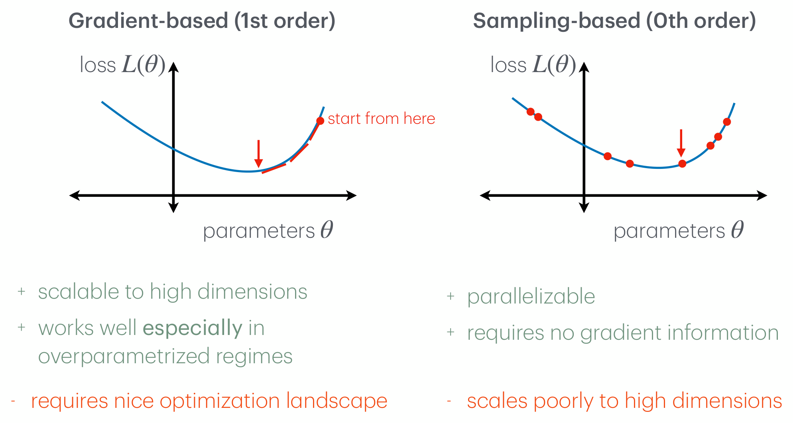
10. 접근 2: 샘플링 기반 최적화 (Approach 2: Sampling-Based Optimization)
이제 8.2절의 질문 “행동 시퀀스를 어떻게 샘플링하는가?”에 답합니다.
10.1 행동 시퀀스
슬라이드는 \(H\)스텝 행동 시퀀스를 하나의 변수로 묶습니다.
\[ \mathbf{A} := \mathbf{a}_t, \ldots, \mathbf{a}_{t+H-1} \]
행동 하나가 \(\lvert \mathbf{a} \rvert\)차원이면 \(\mathbf{A}\)는 \(\lvert \mathbf{a} \rvert \cdot H\)차원 벡터입니다. 샘플링 기반 최적화는 이 벡터 공간에서 점을 뽑는 문제입니다.
슬라이드마다 계획의 끝 색인이 한 칸씩 다릅니다. 4절의 상상 롤아웃과 8절의 목적함수는 \(\mathbf{a}_t\)부터 \(\mathbf{a}_{t+H}\)까지(\(H+1\)개 행동)를, 이 절의 \(\mathbf{A}\)와 목적함수 \(J(\mathbf{A})\)는 \(\mathbf{a}_t\)부터 \(\mathbf{a}_{t+H-1}\)까지(\(H\)개 행동)를 씁니다. 논지에는 영향이 없는 차이이므로, 본문은 각 슬라이드의 표기를 그대로 따릅니다.
10.2 버전 1: 추측과 확인 (Version 1: Guess & Check)
가장 단순한 방법은 슬라이드가 “random shooting”이라고 부르는 추측과 확인입니다.
- 어떤 분포(예: 균등분포)에서 행동 시퀀스 \(\mathbf{A}_1, \ldots, \mathbf{A}_N\)을 많이 뽑는다.
- 보상 합이 가장 큰 것을 고른다.
(이 \(N\)은 뽑는 시퀀스의 개수로, 7절에서 한 스텝에 고를 수 있는 행동의 개수를 가리키던 \(N\)과는 다른 양입니다. 슬라이드도 같은 글자를 두 뜻으로 씁니다.)
\[ \mathbf{A}_{i^*}, \qquad i^* = \arg\max_i \sum_{t'=t}^{t+H-1} r(\mathbf{s}_{t'}, \mathbf{a}_{t'}) \]
여기서 각 \(\mathbf{A}_i\)의 보상 합은, \(\mathbf{s}_t\)에서 출발해 \(\mathbf{A}_i\)의 행동을 차례로 모형에 넣어 얻은 상태들로 계산합니다. 슬라이드 오른쪽 위의 작은 그림이 이를 보여 줍니다. 각 상태에서 행동이 \(\nearrow\)와 \(\searrow\) 두 가지이고 계획이 두 스텝이면, 시퀀스는 \(\mathbf{A}_1 = (\nearrow, \nearrow)\), \(\mathbf{A}_2 = (\nearrow, \searrow)\), \(\mathbf{A}_3\), \(\mathbf{A}_4\)의 네 개이며, 각 시퀀스는 트리에서 뿌리부터 잎까지의 경로 하나(주황 곡선)입니다. Random shooting은 이 경로들 중 몇 개를 무작위로 골라 비교하는 것입니다.
슬라이드는 1단계의 “some distribution”에 주황 밑줄을 긋고 묻습니다 — “이 분포를 개선할 수 있을까?” 균등분포는 이미 좋다고 확인된 영역과 나쁘다고 확인된 영역을 구별하지 않고 뽑습니다. 좋은 시퀀스가 어디쯤 있는지 알게 되면, 그 근처에서 더 많이 뽑는 편이 낫습니다.
10.3 버전 2: 교차 엔트로피 방법 (Version 2: Cross-Entropy Method, CEM)
교차 엔트로피 방법(cross-entropy method, CEM)은 샘플링 분포 자체를 반복해서 고쳐 나갑니다.
- 분포 \(p(\mathbf{A})\)에서 \(\mathbf{A}_1, \ldots, \mathbf{A}_N\)을 많이 뽑는다.
- 각각을 평가한다: \(J(\mathbf{A}_i) = \sum_{t'=t}^{t+H-1} r(\mathbf{s}_{t'}, \mathbf{a}_{t'})\)
- \(J(\mathbf{A}_i)\)가 가장 큰 상위 엘리트(elite) \(\mathbf{A}_{i_1}, \ldots, \mathbf{A}_{i_M}\)을 고른다.
- \(p(\mathbf{A})\)를 엘리트에 다시 맞춘다(refit) — 그리고 1단계로 돌아간다.
(슬라이드는 3단계를 “top-K elites”라고 쓰면서 엘리트의 색인은 \(i_1, \ldots, i_M\)으로 적습니다. 여기서 \(K\)와 \(M\)은 같은 수, 곧 엘리트의 개수입니다.)
분포로는 보통 가우시안을 씁니다.
\[ p(\mathbf{A}) := \mathcal{N}(\mu, \sigma), \qquad \mu, \sigma \in \mathbb{R}^{\lvert \mathbf{a} \rvert \cdot H} \]
\(\sigma\)가 \(\mathbf{A}\)와 같은 차원의 벡터이므로, 각 차원이 독립인 대각 가우시안입니다. 4단계의 다시 맞추기는 예컨대 엘리트의 표본 평균과 표본 분산으로 합니다.
\[ \mu_{\text{new}} = \frac{1}{M} \sum_{j=1}^{M} \mathbf{A}_{i_j}, \qquad \sigma^2_{\text{new}} = \frac{1}{M} \sum_{j=1}^{M} \big(\mathbf{A}_{i_j} - \mu_{\text{new}}\big)^2 \]
제곱은 성분별로 계산합니다. 반복할수록 평균은 좋은 시퀀스 쪽으로 옮겨 가고 분산은 줄어들어, 분포가 좋은 영역에 집중됩니다. 반복이 끝나면 평균 \(\mu\)(또는 지금까지 본 가장 좋은 시퀀스)를 계획으로 씁니다.
보충 유도: 다시 맞추기는 엘리트에 대한 최대가능도 추정이다
위의 두 식이 어디서 나오는지 보겠습니다. 엘리트들을 가장 잘 설명하는 대각 가우시안을 찾는 최대가능도 추정(maximum likelihood estimation)을 하면 됩니다.
1단계 (로그 가능도). 차원 \(d\)의 성분을 아래첨자로 쓰면, 엘리트 \(M\)개의 로그 가능도는
\[ \ell(\mu, \sigma) = \sum_{j=1}^{M} \sum_{d} \left[ -\log \sigma_d - \frac{(\mathbf{A}_{i_j, d} - \mu_d)^2}{2\sigma_d^2} \right] + \text{const} \]
입니다. 대각 가우시안이므로 차원별로 나뉩니다.
2단계 (평균). \(\mu_d\)로 미분해 0으로 두면
\[ \frac{\partial \ell}{\partial \mu_d} = \sum_{j=1}^{M} \frac{\mathbf{A}_{i_j, d} - \mu_d}{\sigma_d^2} = 0 \quad\Longrightarrow\quad \mu_d = \frac{1}{M} \sum_{j=1}^{M} \mathbf{A}_{i_j, d} \]
3단계 (분산). \(\sigma_d\)로 미분해 0으로 두면
\[ \frac{\partial \ell}{\partial \sigma_d} = \sum_{j=1}^{M} \left[ -\frac{1}{\sigma_d} + \frac{(\mathbf{A}_{i_j, d} - \mu_d)^2}{\sigma_d^3} \right] = 0 \quad\Longrightarrow\quad \sigma_d^2 = \frac{1}{M} \sum_{j=1}^{M} (\mathbf{A}_{i_j, d} - \mu_d)^2 \]
이 두 결과를 벡터로 모으면 슬라이드의 식입니다.
이름의 유래. 엘리트들의 경험 분포 \(\hat{q}\)와 \(p\) 사이의 교차 엔트로피는 \(\mathrm{CE}(\hat{q}, p) = -\frac{1}{M}\sum_{j=1}^{M} \log p(\mathbf{A}_{i_j})\)이므로, 이를 최소화하는 것은 위의 로그 가능도를 최대화하는 것과 같습니다. 4단계는 “엘리트 분포와의 교차 엔트로피를 최소화하도록 \(p\)를 고친다”는 뜻이고, 방법의 이름이 여기서 나옵니다.
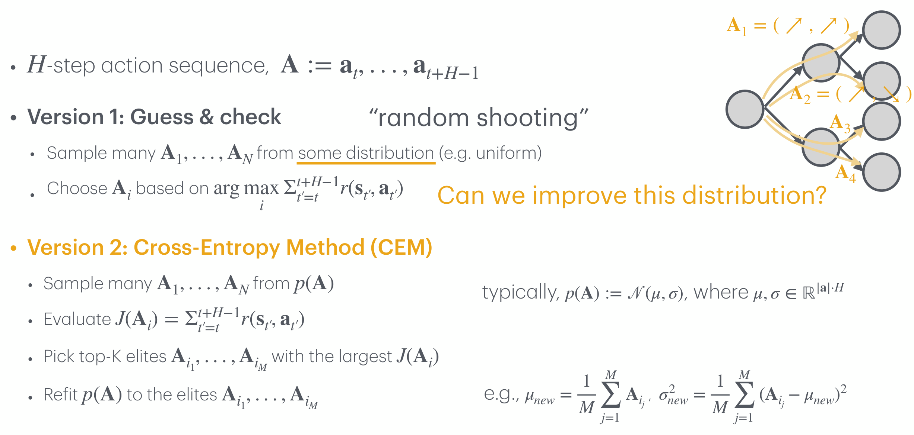
10.4 장점과 단점
두 버전에 공통된 장단점을 슬라이드는 이렇게 정리합니다.
- 장점
- 병렬화하면 빠르다. \(N\)개의 시퀀스는 서로 독립적으로 롤아웃되므로, 모형을 한 번에 \(N\)개씩 묶어 계산할 수 있습니다.
- 단순하다. 모형을 미분할 필요도, 학습률을 조정할 필요도 없습니다.
- 단점
- 고차원으로 확장되지 않는다 — 계획 길이 \(H\)와 행동 차원 \(\lvert \mathbf{a} \rvert\) 둘 다에 대해서 그렇습니다. 탐색 공간이 \(\lvert \mathbf{a} \rvert \cdot H\)차원이기 때문입니다.
단점의 크기를 단순한 계산으로 가늠해 보겠습니다. 좋은 시퀀스가 되려면 각 성분이 자기 범위의 절반 안에 들어가야 한다고 하고, 균등분포로 뽑는다고 합시다. 한 번 뽑아 모든 성분이 맞을 확률은 \((1/2)^{\lvert \mathbf{a} \rvert H}\)입니다. 행동이 6차원이고 \(H = 10\)이면 \(2^{-60} \approx 8.7 \times 10^{-19}\)로, 사실상 한 번도 맞히지 못합니다. CEM은 분포를 좁혀 가며 이 확률을 끌어올리지만, 엘리트를 고르는 기준이 스칼라 하나 \(J(\mathbf{A})\)뿐이라 차원이 높으면 처음의 넓은 분포에서 고른 엘리트조차 대부분의 성분이 무작위에 가깝습니다. 평균이 좋은 쪽으로 움직이는 폭이 그만큼 작아서, 많은 표본과 반복이 필요하다는 근본적인 한계는 남습니다.
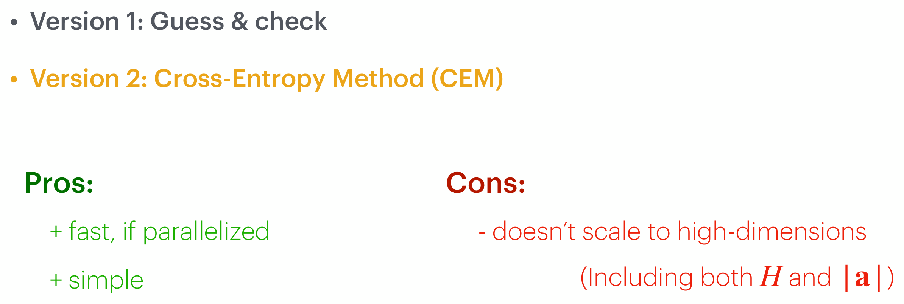
11. 모형을 모른다면? (What If We Don’t Know the Model?)
여기서 데크는 문장 하나만 실린 슬라이드(16쪽)로 흐름을 끊습니다 — “지금까지의 방법은 모두 ’모형’을 안다고 가정했다. 그러나 실제로는 모른다.” 3절에서 본 대로 에이전트에게 모형은 대개 블랙박스입니다.
11.1 모형을 배운다
답은 간단합니다. 모형 \(p(\mathbf{s}' \mid \mathbf{s}, \mathbf{a})\)를 데이터로 배우면 됩니다. 슬라이드는 두 가지 형태를 제시합니다.
- 결정적 모형(deterministic model) \(f_\phi(\mathbf{s}, \mathbf{a})\): 다음 상태 하나를 예측합니다.
- 확률적 모형(stochastic model) \(p_\phi(\mathbf{s}' \mid \mathbf{s}, \mathbf{a})\): 다음 상태의 분포를 예측합니다.
어느 쪽이든 \((\mathbf{s}, \mathbf{a})\)를 입력, \(\mathbf{s}'\)을 정답으로 하는 지도학습(supervised learning)입니다.
\[ \min_\phi \sum_i \big\lVert f_\phi(\mathbf{s}_i, \mathbf{a}_i) - \mathbf{s}'_i \big\rVert^2 \qquad \text{또는} \qquad \max_\phi \sum_i \log p_\phi(\mathbf{s}'_i \mid \mathbf{s}_i, \mathbf{a}_i) \]
(슬라이드는 두 번째 식의 로그 안을 \(f_\phi(\mathbf{s}'_i \mid \mathbf{s}_i, \mathbf{a}_i)\)로 적었지만, 조건부 분포를 가리키므로 확률적 모형의 기호 \(p_\phi\)로 옮겨 적었습니다.)
두 식은 사실 같은 것의 두 얼굴입니다. 평균이 \(f_\phi(\mathbf{s}, \mathbf{a})\)이고 분산이 \(\sigma^2\)로 고정된 가우시안 모형의 로그 가능도는
\[ \log \mathcal{N}\big(\mathbf{s}';\, f_\phi(\mathbf{s}, \mathbf{a}),\, \sigma^2 I\big) = -\frac{1}{2\sigma^2} \big\lVert \mathbf{s}' - f_\phi(\mathbf{s}, \mathbf{a}) \big\rVert^2 + \text{const} \]
이므로, 로그 가능도를 최대화하는 것은 제곱 오차를 최소화하는 것과 같습니다. 9회차의 TD3+BC에서 행동 복제(behavioral cloning, BC) 항을 해석할 때 쓴 것과 같은 관계입니다.
11.2 알고리즘
모형을 배워 계획하는 첫 번째 알고리즘은 세 단계입니다.
- 어떤 정책(예: 무작위 정책)을 실행해 데이터 \(D = \{(\mathbf{s}, \mathbf{a}, \mathbf{s}')_i\}\)를 모은다.
- \(\sum_i \lVert f_\phi(\mathbf{s}_i, \mathbf{a}_i) - \mathbf{s}'_i \rVert^2\)를 최소화하도록 모형 \(f_\phi(\mathbf{s}, \mathbf{a})\)를 학습한다.
- 행동 시퀀스를 반복적으로 샘플링하고 모형 \(f_\phi(\mathbf{s}, \mathbf{a})\)에 통과시켜 행동을 고른다 — 10절의 random shooting이나 CEM입니다.
모형은 다음 상태만 예측하므로, 3단계의 보상 합은 5절에서 본 대로 알고 있는 보상 함수 \(r(\mathbf{s}, \mathbf{a})\)를 예측 상태에 적용해 계산하는 셈입니다. 1단계의 데이터에는 보상 라벨이 필요 없다는 점도 기억해 둘 만합니다(19절).
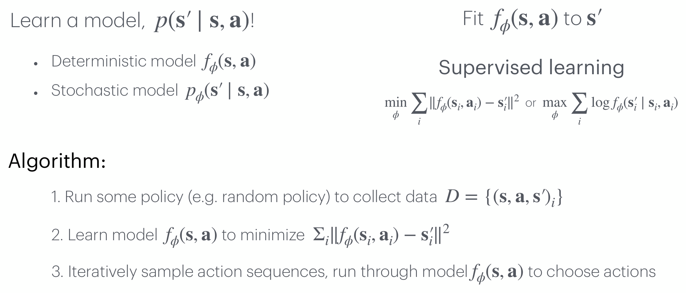
12. 이 접근은 어떻게 실패하는가 (How Can This Approach Fail?)
슬라이드는 절벽 사진 위에 세 단계의 결과를 색깔별로 그립니다. 오른쪽 알고리즘의 세 단계가 각각 주황빨강(1단계: 데이터 수집), 초록(2단계: 모형 학습), 노랑(3단계: 계획)으로 칠해져 있고, 사진의 그림도 같은 색을 씁니다.
- 빨간 곡선 (1단계): 무작위 정책이 모은 데이터입니다. 사진 왼쪽 풀밭에서 제자리를 맴돌며, 절벽 가장자리 근처에는 가 보지 못했습니다.
- 초록 (2단계): 모형이 그 데이터에서 배운 것입니다. 데이터가 있는 영역에서는 오른쪽으로 갈수록 땅이 높아지므로, 모형은 “오른쪽으로 갈수록 더 높이 올라갈 수 있다!”는 동역학을 배웁니다. 목표가 높이 올라가는 것이므로, 이 모형으로 계획하면 “오른쪽으로 가야 한다”는 결론이 나옵니다. 슬라이드는 이 결론도 같은 초록색으로 적었지만, 모형 자체는 보상을 모르며 이 결론은 모형과 목표를 함께 쓰는 계획에서 나옵니다.
- 노란 곡선 (3단계): 그 모형으로 높이 올라가는 계획을 세워 그대로 따라가면, 오른쪽으로 계속 가다가 절벽 끝을 넘어 바다로 떨어집니다. 모형 안에서는 계속 올라가는 계획이지만, 실제 세계에서는 절벽 끝에서 땅이 끝나기 때문입니다.
무엇이 잘못되었을까요? 슬라이드의 답은 데이터 분포 불일치(data distribution mismatch)입니다.
\[ p_D(\mathbf{s}) \neq p_{\pi_f}(\mathbf{s}) \]
- \(p_D(\mathbf{s})\)는 모형을 학습시킨 데이터의 상태 분포, 곧 무작위 정책이 방문한 상태의 분포입니다.
- \(p_{\pi_f}(\mathbf{s})\)는 모형 \(f\)로 계획해서 행동할 때, 곧 계획기(planner)가 정하는 정책 \(\pi_f\)를 따를 때 방문하는 상태의 분포입니다.
모형은 \(p_D\)에서만 정확합니다. 그런데 계획기는 모형이 좋다고 말하는 곳으로 가려 하고, 그곳은 데이터가 없는 곳일 수 있습니다. 그래서 → 모형의 예측이 부정확해지고 → 계획이 부정확해집니다.
9회차에서 Q-학습의 \(\max\)가 Q-함수의 오차 가운데 위로 튄 것만 골라냈듯이, 계획기도 모형의 오차 가운데 보상을 부풀리는 쪽을 골라냅니다. 최적화기는 모형이 맞는지 틀리는지 구별하지 않고 목적함수가 큰 곳을 찾을 뿐이므로, 데이터 밖에서 모형이 지어낸 “계속 올라가는 언덕”은 계획기에게 가장 매력적인 목적지가 됩니다. 계획이 강할수록 이 문제도 커집니다.
1회차의 행동 복제에서도 같은 구조의 문제가 있었습니다. 학습한 정책이 전문가가 가 보지 않은 상태로 들어가면, 그 상태에서는 학습 데이터가 없어 실수가 쌓였습니다. 여기서는 정책 대신 모형이 학습 분포 밖의 상태에서 틀린다는 점만 다릅니다.
슬라이드는 생각해 볼 질문을 남깁니다 — “이 문제를 어떻게 완화할 수 있을까?” 그리고 회색으로 답을 적습니다 — “모형을 더 정확하게 만든다.” 핵심은 어디에서 정확하게 만드느냐이며, 다음 절이 답합니다.
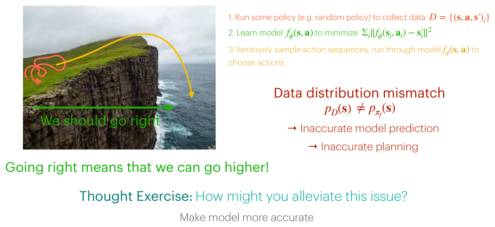
13. 접근 2: 샘플링 기반 최적화 — 데이터 다시 모으기 (Approach 2: Sampling-Based Optimization)
10절과 같은 제목의 슬라이드가 다시 나오지만, 위쪽 그림과 목적함수는 8.2절의 슬라이드와 같고, 아래 알고리즘은 11.2절의 세 단계에 주황색 넷째 단계를 붙인 것입니다.
- 어떤 정책(예: 무작위 정책)을 실행해 데이터 \(D = \{(\mathbf{s}, \mathbf{a}, \mathbf{s}')_i\}\)를 모은다.
- \(\sum_i \lVert f_\phi(\mathbf{s}_i, \mathbf{a}_i) - \mathbf{s}'_i \rVert^2\)를 최소화하도록 모형 \(f_\phi(\mathbf{s}, \mathbf{a})\)를 학습한다.
- 행동 시퀀스를 반복적으로 샘플링하고 모형 \(f_\phi(\mathbf{s}, \mathbf{a})\)에 통과시켜 행동을 고른다.
- 계획한 행동을 실제로 실행하고, 그때 방문한 전이 \((\mathbf{s}, \mathbf{a}, \mathbf{s}')\)를 \(D\)에 덧붙인다. — 그리고 2단계로 돌아간다.
넷째 단계가 12절의 질문에 대한 답입니다. 모형을 정확하게 만들어야 할 곳은 계획기가 실제로 가는 곳이고, 그곳의 데이터를 얻는 가장 확실한 방법은 계획기를 그곳에 보내 보는 것입니다. 이 고리를 돌수록 \(D\)의 상태 분포는 \(p_{\pi_f}\)에 가까워지고, 모형은 계획에 필요한 영역에서 정확해집니다.
1회차의 DAgger는 학습 중인 정책이 방문한 상태를 모아 전문가에게 라벨을 받아 데이터에 더함으로써 분포 이동을 줄였습니다. 여기서는 계획기가 방문한 상태–행동 쌍에 환경이 직접 라벨(\(\mathbf{s}'\))을 붙여 줍니다. 학습 분포를 “내가 실제로 가는 곳”에 맞춘다는 점에서 같은 처방입니다.
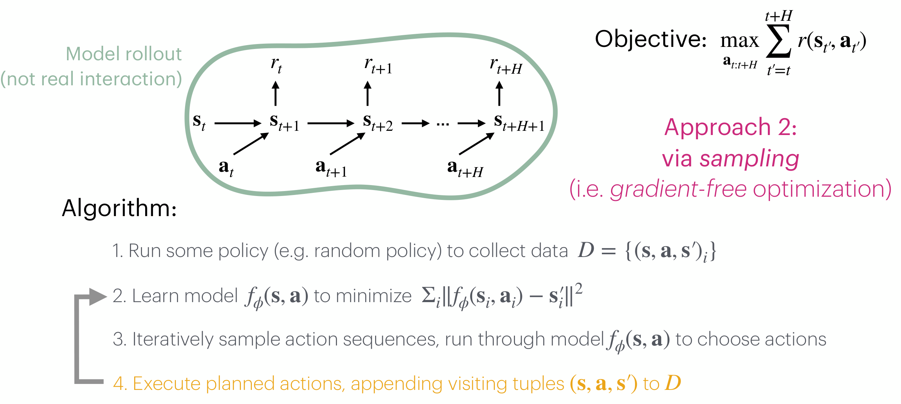
14. 절벽 다시 보기 (Revisiting the Cliff)
같은 절벽에서 네 단계 알고리즘을 돌리면 어떻게 될까요? 18쪽과 비교하면 슬라이드의 그림이 달라진 점은 세 가지입니다.
- 빨간 곡선이 이제 맴도는 부분에서 이어져 절벽 끝을 넘어 바다로 떨어지는 궤적까지 포함합니다. 첫 계획을 실제로 실행해 본 결과가 데이터(빨강)에 들어간 것입니다. 이제 모형은 절벽 끝 너머에서 무슨 일이 일어나는지를 데이터로 배웁니다.
- 18쪽에서 초록색으로 그려졌던 오른쪽 화살표와 “We should go right”가 사라졌습니다.
- 노란 화살표는 이제 오른쪽 위로 곧게 올라가 절벽 꼭대기에서 멈춥니다. 고쳐진 모형으로 다시 계획한 결과입니다.
아래의 문장도 달라졌습니다. “오른쪽으로 갈수록 더 높이 올라갈 수 있다!”의 글자는 그대로지만 색이 초록(2단계, 모형이 배운 것)에서 데이터와 같은 주황빨강으로 바뀌었습니다. 여전히 맞는 말이지만 그것은 꼭대기까지만이고, 새로 붙은 주황 문장대로 최종 정책은 “꼭대기까지 가서 멈춘다(go to the top and stop)”입니다.
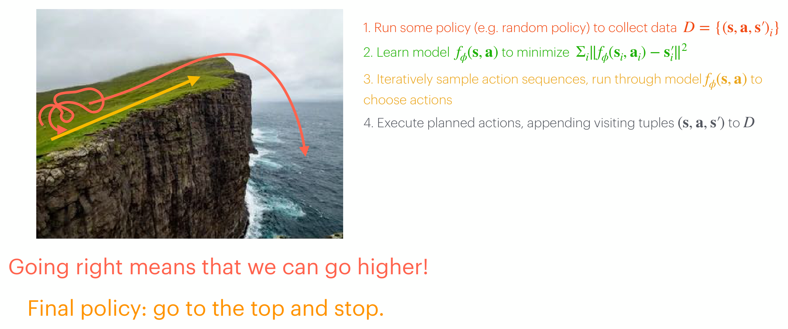
15. 계획을 더 잘할 수 있을까 (Can We Do Planning Even Better?)
13절의 4단계는 “계획한 행동들을 실행한다”였습니다. 계획한 \(H\)개의 행동을 한꺼번에 실행한다는 뜻입니다. 슬라이드는 이 방식을 두 그림으로 대비합니다.
- 개루프(open-loop): 사람이 행동 시퀀스 \(\mathbf{a}_{1:H}\)를 한 번에 정해 세계에 보냅니다. 화살표가 한 방향뿐이며, 실행하는 동안 세계가 어떻게 변하는지 보지 않습니다.
- 폐루프(closed-loop): 사람이 행동 \(\mathbf{a}_t\) 하나를 보내고, 세계에서 다음 상태 \(\mathbf{s}_{t+1}\)을 돌려받은 뒤 다음 행동을 정합니다. 화살표가 양방향입니다.
슬라이드는 두 질문을 던집니다.
- 개루프가 나쁜 것은 언제인가? 계획은 모형이 예측한 상태를 따라 세워졌으므로, 모형에 오차가 있거나 환경 자체가 확률적이면 실제 상태가 예측에서 벗어납니다. 개루프는 그 차이를 보지 못한 채 원래 계획대로 행동하므로, 처음의 작은 차이가 계획 끝까지 쌓입니다.
- 계획을 폐루프로 만들 방법은? 실제 상태를 볼 때마다 계획을 고치면 됩니다. 다음 절이 그 방법입니다.
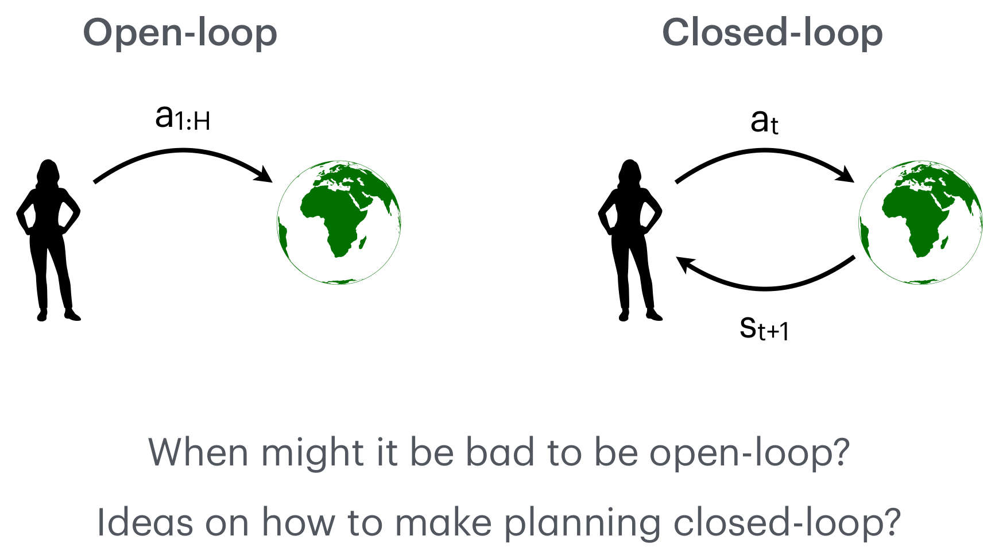
16. 계획하고 다시 계획하기 (Plan & Replan)
답은 재계획(replanning)입니다. 알고리즘은 다섯 단계로 바뀝니다.
- 기본 정책 \(\pi_0(\mathbf{a}_t \mid \mathbf{s}_t)\)(예: 무작위 정책)를 실행해 데이터 \(D = \{(\mathbf{s}, \mathbf{a}, \mathbf{s}')_i\}\)를 모은다.
- \(\sum_i \lVert f_\phi(\mathbf{s}_i, \mathbf{a}_i) - \mathbf{s}'_i \rVert^2\)를 최소화하도록 모형 \(f_\phi(\mathbf{s}, \mathbf{a})\)를 학습한다.
- 모형 \(f_\phi(\mathbf{s}, \mathbf{a})\)로 행동 시퀀스를 최적화한다.
- 계획한 행동 중 첫 번째 것만 실행하고, 그 결과 상태 \(\mathbf{s}'\)을 관측한다.
- \((\mathbf{s}, \mathbf{a}, \mathbf{s}')\)를 \(D\)에 덧붙인다.
슬라이드 왼쪽에는 회색 꺾인 화살표가 두 개 있습니다. 안쪽 고리는 3단계로 돌아가 매 스텝 새로 관측한 상태에서 다시 계획하는 것이고, 바깥 고리는 2단계로 돌아가 쌓인 데이터로 모형을 다시 학습하는 것입니다. 슬라이드는 이 방식을 “모델 예측 제어(Model-Predictive Control, MPC)”라고 부릅니다.
매 스텝 세우는 계획 자체는 \(H\)스텝짜리 개루프 계획이지만, 그중 첫 행동만 실행하고 나머지는 버린 뒤 실제로 관측한 상태에서 처음부터 다시 계획합니다. 계획이 실제 상태를 매 스텝 반영하므로, 전체 행동 방식은 폐루프가 됩니다.
슬라이드의 그림은 이를 자동차로 보여 줍니다. 차로 가운데의 주황 점선이 가야 할 길인데, 뒤쪽 차는 점선 위에 있지만 앞쪽 차는 차머리가 점선 위쪽으로 틀어져 점선에서 벗어나 있고, 초록 화살표가 점선 쪽으로 돌아오게 하는 수정을 가리킵니다. 빨간 글씨 그대로 “재계획은 모형 오차를 바로잡는 데 도움이 된다(replanning helps with model errors).”
| 장점 | 단점 |
|---|---|
| 모형 오차를 바로잡도록 다시 계획한다 | 계산량이 많다 |
단점의 크기는 쉽게 셈할 수 있습니다. CEM으로 매 스텝 계획한다면, 시퀀스 \(N\)개를 \(I\)번 반복해 뽑고 각 시퀀스를 \(H\)스텝 롤아웃하므로, 실제 행동 하나를 고를 때마다 모형 호출이 \(N \cdot I \cdot H\)번 필요합니다. 13절의 방식은 \(H\)스텝마다 한 번 계획했으므로, MPC는 같은 길이의 에피소드에서 계획을 약 \(H\)배 자주 합니다.
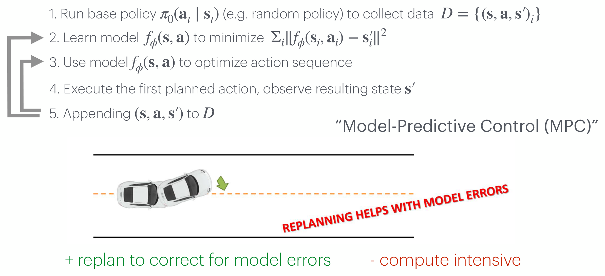
17. 요약: 모형 기반 계획 (Summary: Model-Based Planning)
모형 기반 계획을 슬라이드는 세 줄로 요약합니다.
- 행동 \(\mathbf{a}_1, \ldots, \mathbf{a}_H\)를 경사 기반 또는 샘플링 기반 최적화로 계획할 수 있다.
- 계획으로 모은 데이터로 모형을 갱신한다.
- 실수를 반영하도록 주기적으로 재계획한다.
| 장점 | 단점 |
|---|---|
| 단순하다 | 시험 시간(test time)에 계산이 많다 |
| 다른 목표·보상을 쉽게 끼워 넣을 수 있다 (어쩌면 시험 시간에도!) | 짧은 지평(horizon)의 문제에서만 실용적이다 (또는 보상이 매우 촘촘하게 설계(shaped)된 경우) |
두 번째 장점은 모형이 보상과 분리되어 있기 때문에 생깁니다. 모형 \(f_\phi\)는 “행동하면 상태가 어떻게 바뀌는가”만 배웠으므로, 계획 목적함수의 \(r\)을 바꾸기만 하면 같은 모형으로 다른 과제를 풀 수 있습니다. 정책이나 Q-함수는 특정 보상에 맞춰 학습되므로 이렇게 할 수 없습니다.
두 번째 단점의 괄호도 짚어 둘 만합니다. 계획은 \(H\)스텝 안의 보상만 봅니다. 목표에 도달했을 때만 보상이 주어지고 목표가 \(H\)스텝보다 멀다면, 모든 후보 시퀀스의 보상 합이 0이 되어 계획기가 고를 근거가 사라집니다. 목표에 가까워질수록 조금씩 보상을 주도록 보상을 설계(shaping)하면 짧은 지평 안에서도 방향을 알 수 있습니다.
17.1 왜 짧은 지평뿐인가
슬라이드는 이유를 두 가지로 답합니다.
- (a) 긴 계획은 계산이 너무 비싸다. 탐색 공간은 \(\lvert \mathbf{a} \rvert \cdot H\)차원이고(10.4절), 평가 한 번에 모형 호출이 \(H\)번 듭니다.
- (b) 모형은 긴 지평에서 정확하지 않다.
슬라이드는 (b)의 근거를 따로 적지 않으므로, 아래는 이를 보이는 보충 계산입니다. 실제 동역학이 결정적인 \(f\)이고, 학습한 모형 \(\hat{f}\)(11절의 \(f_\phi\)에 해당합니다)가 다음 두 조건을 만족한다고 합시다.
- 한 스텝 오차: 모든 \((\mathbf{s}, \mathbf{a})\)에서 \(\lVert \hat{f}(\mathbf{s}, \mathbf{a}) - f(\mathbf{s}, \mathbf{a}) \rVert \le \epsilon\)
- 립시츠 연속성(Lipschitz continuity): \(\lVert \hat{f}(\mathbf{s}_1, \mathbf{a}) - \hat{f}(\mathbf{s}_2, \mathbf{a}) \rVert \le L \lVert \mathbf{s}_1 - \mathbf{s}_2 \rVert\)
같은 행동 시퀀스를 실제 상태 \(\mathbf{s}_k\)와 예측 상태 \(\hat{\mathbf{s}}_k\)에 적용할 때, 오차 \(e_k = \lVert \hat{\mathbf{s}}_k - \mathbf{s}_k \rVert\)는 삼각부등식으로
\[ \begin{aligned} e_{k+1} &= \big\lVert \hat{f}(\hat{\mathbf{s}}_k, \mathbf{a}_k) - f(\mathbf{s}_k, \mathbf{a}_k) \big\rVert \\ &\le \underbrace{\big\lVert \hat{f}(\hat{\mathbf{s}}_k, \mathbf{a}_k) - \hat{f}(\mathbf{s}_k, \mathbf{a}_k) \big\rVert}_{\le\, L e_k} + \underbrace{\big\lVert \hat{f}(\mathbf{s}_k, \mathbf{a}_k) - f(\mathbf{s}_k, \mathbf{a}_k) \big\rVert}_{\le\, \epsilon} \end{aligned} \]
를 만족합니다. 출발점은 실제 상태이므로 \(e_0 = 0\)이고, 이 점화식을 풀면
\[ e_k \le \epsilon \left(1 + L + L^2 + \cdots + L^{k-1}\right) = \epsilon\, \frac{L^k - 1}{L - 1} \qquad (L \neq 1) \]
입니다. 이것은 오차의 상한이므로 실제 오차가 늘 이만큼 커지는 것은 아닙니다. 그러나 \(L > 1\)이면 이 상한이 지평에 대해 지수적으로 커지고, \(L = 1\)이어도 \(k\epsilon\)으로 선형으로 늘며, \(L < 1\)일 때만 \(\epsilon/(1 - L)\) 아래로 묶입니다. 따라서 학습한 모형이 \(L \ge 1\)이면 한 스텝 오차 \(\epsilon\)이 아무리 작아도, 예측을 다시 입력으로 쓰는 롤아웃이 길어질수록 오차가 커질 여지를 막을 수 없습니다.
슬라이드는 다음 부분으로 넘어가는 질문으로 끝납니다 — “학습한 모형을 이용해 정책을 훈련할 수 있을까?”
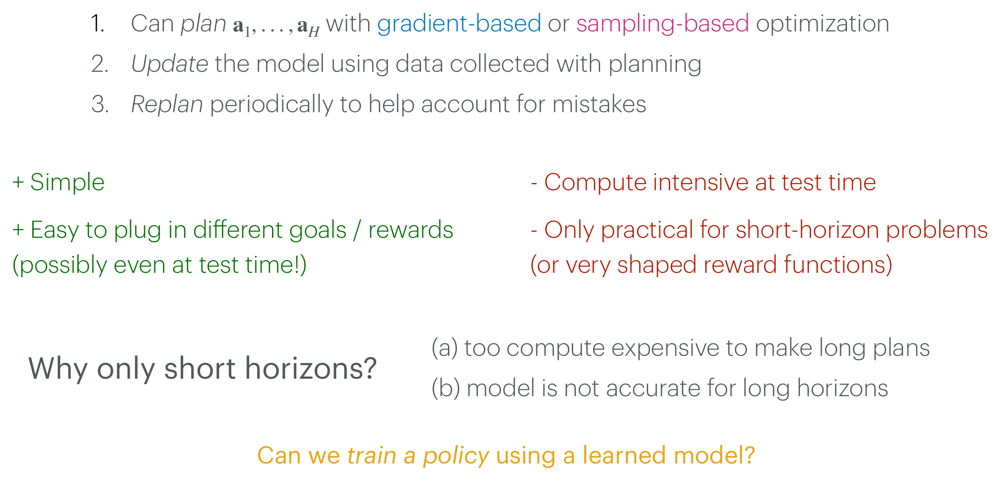
18. 모형 기반 정책 최적화 (Model-Based Policy Optimization)
장 구분 슬라이드(24쪽) Model-based policy optimization과 함께 모형의 두 번째 쓰임, 곧 5절의 “상상 훈련 데이터 생성”으로 넘어갑니다. 같은 제목의 슬라이드 세 장이 하나의 논증을 이룹니다.
18.1 선택지 1: 계획기의 행동을 정책으로 증류하기
첫 번째 선택지는 계획기의 행동을 정책으로 증류(distill)하는 것, 곧 계획기가 고른 행동과 일치하도록 정책을 학습하는 것입니다. 계획기를 전문가로 둔 행동 복제라고 볼 수 있으며, 1회차의 BC 목적함수로 쓰면
\[ \max_\theta \; \mathbb{E}_{\mathbf{s} \sim \mathcal{D}_{\text{plan}}} \big[ \log \pi_\theta(\mathbf{a}^{\text{planner}}(\mathbf{s}) \mid \mathbf{s}) \big] \]
꼴입니다. 여기서 \(\mathcal{D}_{\text{plan}}\)은 계획기를 실행하며 방문한 상태들의 모음이고, \(\mathbf{a}^{\text{planner}}(\mathbf{s})\)는 상태 \(\mathbf{s}\)에서 계획기가 고른 행동입니다.
- 장점: 시험 시간에 더 이상 계산이 많지 않다. 행동을 고를 때 계획 대신 정책 신경망을 한 번 통과시키면 됩니다.
- 단점: 여전히 짧은 지평의 문제로 제한된다. 정책은 계획기를 흉내 낼 뿐이므로, 짧은 지평의 계획기가 풀지 못하는 문제는 정책도 풀지 못합니다.
그렇다면 모형으로 더 긴 지평의 문제를 풀려면 어떻게 해야 할까요? 슬라이드는 두 방향을 제시합니다.
- 종단 가치 함수(terminal value function)와 함께 계획한다. 계획의 끝 상태에 가치 함수 \(V\)를 붙여 \(\sum_{t'=t}^{t+H-1} r(\mathbf{s}_{t'}, \mathbf{a}_{t'}) + V(\mathbf{s}_{t+H})\)를 최대화하면, 지평 너머의 보상을 \(V\)가 요약해 줍니다.
- 모형에서 얻은 데이터로 모형 없는 강화학습 방법을 보강한다.
슬라이드는 “오늘은 2번에 집중하자”고 말합니다.
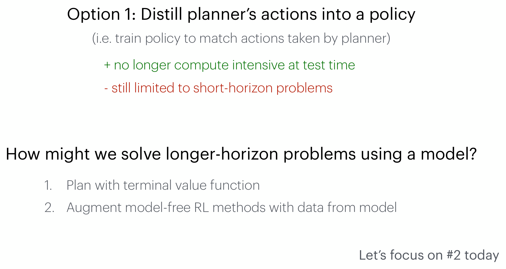
18.2 핵심 아이디어: 모형이 시뮬레이션한 롤아웃으로 데이터를 늘린다
두 번째 방향의 핵심 아이디어는 한 줄입니다 — “모형이 시뮬레이션한 롤아웃으로 데이터를 늘린다(augment data with model-simulated roll-outs).” 실제 궤적 하나가 있을 때, 롤아웃을 어디서부터, 얼마나 길게 만들지가 문제입니다. 슬라이드는 세 후보를 차례로 검토합니다.
| 후보 | 문제 |
|---|---|
| 초기 상태에서 전체 궤적을 생성한다 | 모형이 긴 지평에서 정확하지 않을 수 있다 |
| 초기 상태에서 부분 궤적을 생성한다 | 뒤쪽 상태를 잘 덮지(coverage) 못할 수 있다 |
| 데이터의 모든 상태에서 부분 궤적을 생성한다 | (슬라이드가 문제를 달지 않은 답) |
- 첫 후보는 17.1절의 오차 누적에 정면으로 부딪힙니다.
- 둘째 후보는 롤아웃을 짧게 끊어 오차 누적을 줄이지만, 모든 롤아웃이 초기 상태 근처에 머뭅니다. 실제 궤적의 뒤쪽 상태(그림의 \(\mathbf{s}_5, \mathbf{s}_6\) 근처)에서의 상상 데이터가 생기지 않으니, 정책은 그 상태들에서 학습할 기회를 얻지 못합니다.
- 셋째 후보는 두 문제를 함께 피합니다. 실제 데이터의 아무 상태에서나 출발하므로 실제로 방문한 상태 분포 전체를 덮고, 롤아웃이 짧으므로 17.1절의 오차 상한에서 \(k\)가 작아 모형 오차가 적게 쌓입니다.
슬라이드의 그림이 셋째 후보를 보여 줍니다. 청록색 점 \(\mathbf{s}_1, \ldots, \mathbf{s}_6\)이 실제 궤적이고, 분홍 점과 분홍 화살표가 증강 데이터입니다. 분홍 가지는 모두 두 스텝 길이이며, 초기 상태 \(\mathbf{s}_1\)뿐 아니라 중간의 \(\mathbf{s}_3\)과 \(\mathbf{s}_4\)에서도 뻗어 나옵니다.
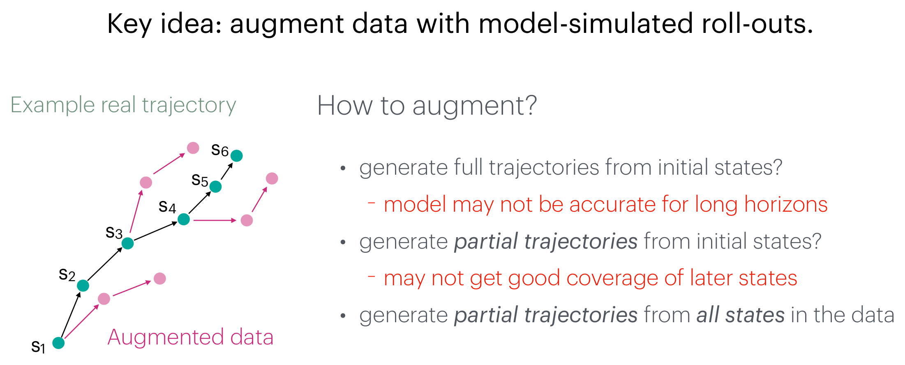
18.3 전체 알고리즘
이 아이디어를 담은 전체 알고리즘은 네 단계의 반복입니다.
- 현재 정책 \(\pi_\theta\)로 데이터를 모아 \(D_{\text{env}}\)에 더한다.
- \(D_{\text{env}}\)로 모형 \(p_\phi(\mathbf{s}' \mid \mathbf{s}, \mathbf{a})\)를 갱신한다.
- \(D_{\text{env}}\)의 상태들에서 출발해, 모형 \(p_\phi\) 안에서 \(\pi_\theta\)로 상상 롤아웃을 모으고 \(D_{\text{model}}\)에 더한다.
- \(D_{\text{model}}\)로 정책 \(\pi_\theta\)(와 비평가 \(Q\))를 갱신한다. — 그리고 1단계로 돌아간다.
슬라이드는 두 가지를 덧붙입니다.
- 4단계에는 다양한 모형 없는 강화학습 방법을 쓸 수 있다. 4단계가 보는 것은 전이 데이터뿐이므로, 알고리즘을 고치지 않고도 실제 데이터 자리에 모형 데이터를 넣을 수 있습니다(다만 모형 데이터에는 모형 오차가 섞이므로 18.2절대로 롤아웃을 짧게 끊습니다). 비평가 \(Q\)가 언급된 것은 행위자–비평가 계열을 염두에 둔 것입니다. 3단계는 반복마다 \(D_{\text{model}}\)에 롤아웃을 더하므로 버퍼에는 지난 반복의 \(\pi_\theta\)들이 만든 전이가 쌓이고, 출발 상태도 과거 정책들이 모은 \(D_{\text{env}}\)에서 오므로, 재생 버퍼에서 학습하는 7회차의 SAC 같은 오프폴리시 방법과 자연스럽게 맞물립니다(슬라이드가 특정 알고리즘을 지정하지는 않습니다).
- 정책 갱신에 \(D_{\text{env}}\)를 추가로 쓸 수도 있다. 모형이 만든 데이터에 실제 데이터를 섞는 것입니다.
슬라이드의 모형 \(p_\phi(\mathbf{s}' \mid \mathbf{s}, \mathbf{a})\)는 다음 상태만 예측하므로, \(D_{\text{model}}\)의 전이에 붙는 보상은 5절에서 본 대로 알고 있는 보상 함수 \(r(\mathbf{s}, \mathbf{a})\)를 예측 상태에 적용해 계산합니다. 보상 함수를 모른다면 모형이 \(p_\phi(\mathbf{s}', r \mid \mathbf{s}, \mathbf{a})\)처럼 보상까지 예측하도록 학습해 채울 수도 있습니다.
이 구조에서 앞 절들의 교훈이 모두 반영되어 있습니다.
- 1단계에서 현재 정책이 실제로 방문한 데이터를 모아 2단계에서 모형을 갱신하므로, 13절의 데이터 재수집처럼 모형이 정책이 가는 곳에서 정확해집니다.
- 3단계의 롤아웃은 18.2절대로 실제 데이터의 상태에서 출발하는 짧은 롤아웃이므로, 17.1절의 오차 누적을 작게 묶어 둡니다.
- 시험 시간에는 학습된 \(\pi_\theta\)만 실행하면 되므로, 17절의 “시험 시간 계산” 단점이 사라집니다. 그리고 4단계에 비평가 \(Q\)를 쓰는 행위자–비평가 방법을 쓰면, 정책은 짧은 롤아웃을 넘어서는 지평의 가치를 \(Q\)의 부트스트랩으로 배우므로 18.1절의 증류와 달리 계획 지평에 묶이지 않습니다.
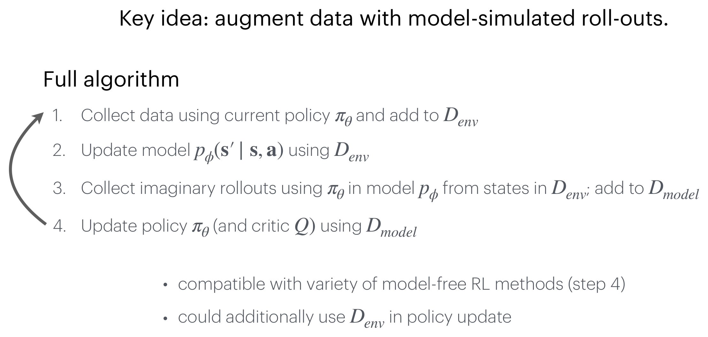
19. 모형 기반 강화학습은 언제 쓰는가 (When to Use Model-Based RL?)
그렇다면 언제 모형을 배워야 할까요? 슬라이드는 장점 셋과 단점 둘을 듭니다.
장점
- 모형은 배우기 쉽다면 엄청나게 유용하다. 4–5절에서 보았듯 모형이 있으면 궤적을 얼마든지 지어낼 수 있으므로, 비싼 실제 상호작용을 아낄 수 있습니다.
- 모형은 보상 라벨 없이 학습할 수 있다(자기지도, self-supervised). 11절의 손실은 \((\mathbf{s}, \mathbf{a}, \mathbf{s}')\)만 쓰고 \(r\)을 쓰지 않습니다. 다음 상태라는 정답이 상호작용에서 저절로 주어지기 때문입니다.
- 모형은 어느 정도 과제와 무관하다(task-agnostic) — 때로는 보상이 다른 과제로 옮겨 쓸 수 있다. 17절의 “다른 목표·보상을 쉽게 끼워 넣을 수 있다”와 같은 이유입니다. 환경의 물리는 과제가 바뀌어도 그대로입니다.
단점
- 모형은 과제 성능을 최적화하지 않는다. 모형의 손실은 다음 상태의 모든 성분을 고르게 맞추려 하지만, 과제에 중요한 것은 그중 일부일 수 있습니다. 손실이 작아도 과제에 결정적인 성분에서 조금 틀리면 계획은 크게 틀릴 수 있습니다.
- 때로는 정책보다 배우기 어렵다. 2절의 바나나 던지기에서, 바나나가 공중에서 어떻게 돌며 날아가는지를 정확히 예측하는 것보다 “적당한 힘으로 던진다”는 행동을 배우는 편이 훨씬 쉬울 수 있습니다.
결론은 한 문장입니다 — “모형을 쓸지는 그것이 얼마나 배우기 어려운가에 달려 있다!”
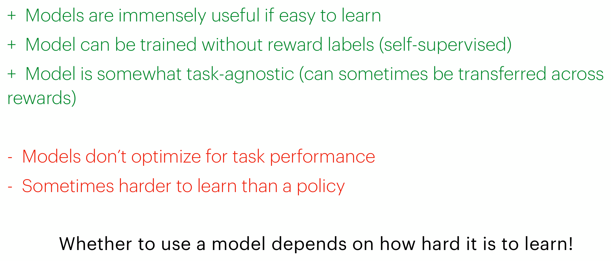
20. 요약 (Summary)
요약 슬라이드는 강의 전체를 네 개의 불릿으로 정리합니다.
- 모형: \(p(\mathbf{s}', r \mid \mathbf{s}, \mathbf{a})\) 또는 \(p(\mathbf{s}' \mid \mathbf{s}, \mathbf{a})\)
- 모형 기반 강화학습: (참이든 학습한 것이든) 모형을 이용해 가장 좋은 행동을 찾는다
- 모형을 계획에 쓴다
- 모형을 정책 최적화에 쓴다
계획에 쓰는 방법들을 슬라이드의 한 줄 요약과 함께 표로 정리하면 다음과 같습니다.
| 방법 | 슬라이드의 한 줄 요약 | 쓰는 정보 | 본문 |
|---|---|---|---|
| 경사 기반 최적화 | 행동 시퀀스를 하나 뽑고, 모형을 이용해 경사 상승한다 | 모형의 기울기 | 8.1절 |
| Random shooting | 행동 시퀀스를 무작위로 뽑고, 가장 좋은 것을 고른다 | 모형의 예측값 | 10.2절 |
| CEM | 행동 시퀀스를 반복해서 뽑고, 분포를 다시 맞춘다 | 모형의 예측값 | 10.3절 |
| MPC | 계획하고, 첫 행동을 실행하고, 다시 계획한다 | 위 방법 중 하나 + 실제 관측 | 16절 |
정책 최적화에 쓰는 방법은 18절의 네 단계 알고리즘, 곧 실제 데이터의 모든 상태에서 짧은 모형 롤아웃을 만들어 모형 없는 알고리즘의 데이터를 늘리는 것이었습니다.
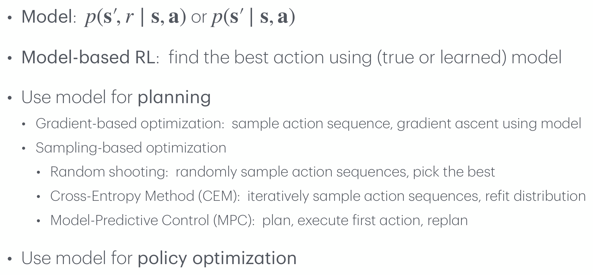
21. 다음 시간 (Next Class)
마지막 슬라이드는 다음 강의의 주제를 예고합니다 — 고급 모형 기반 강화학습 알고리즘(advanced model-based RL algorithms)으로, Dreamer와 TD-MPC를 다룹니다.
정리하며 (Closing Remarks)
이번 강의의 논리 사슬을 한 장으로 요약하면 다음과 같습니다.
| 단계 | 내용 | 근거 |
|---|---|---|
| ① 모형의 정의 | 강화학습의 “모형”은 신경망이 아니라 환경의 전이 확률 \(p(\mathbf{s}', r \mid \mathbf{s}, \mathbf{a})\)이며, 에이전트는 보통 env.step(a)의 결과만 볼 뿐 이를 모른다 |
2–3절 |
| ② 모형의 쓰임 | 모형을 알면 궤적을 무한히 시뮬레이션할 수 있어, 계획(탐색)과 상상 훈련 데이터 생성에 쓴다 | 4–5절 |
| ③ 계획 문제 | 모형 안에서 보상 합을 최대화하는 행동 시퀀스를 찾되, 전수 탐색은 \(O(N^H)\)로 극도로 비효율적이다 | 6–7절 |
| ④ 경사 기반 계획 | 미분 가능한 모형을 거꾸로 거슬러 행동 시퀀스에 대한 기울기를 구하고 경사 상승한다; 고차원에 강하지만 좋은 지형이 필요하다 | 8–9절 |
| ⑤ 샘플링 기반 계획 | random shooting은 많이 뽑아 최선을 고르고, CEM은 엘리트에 대한 최대가능도로 가우시안을 다시 맞추며 분포를 좁힌다; 단순하고 병렬화가 쉽지만 \(\lvert \mathbf{a} \rvert \cdot H\)차원에서 확장성이 나쁘다 | 9–10절 |
| ⑥ 모형 학습 | 모형을 모르면 \((\mathbf{s}, \mathbf{a}, \mathbf{s}')\)로 지도학습한다 (제곱 오차 = 고정 분산 가우시안의 최대가능도) | 11절 |
| ⑦ 분포 불일치 | 무작위 정책 데이터로 배운 모형은 \(p_D \neq p_{\pi_f}\)인 곳에서 틀리고, 계획기는 그 오차를 이용해 절벽으로 간다 | 12절 |
| ⑧ 데이터 재수집 | 계획한 행동을 실행해 얻은 전이를 \(D\)에 더하고 모형을 다시 학습해, 계획기가 가는 곳에서 모형을 고친다 (DAgger와 같은 처방) | 13–14절 |
| ⑨ MPC | 첫 행동만 실행하고 실제 상태에서 다시 계획해 개루프를 폐루프로 바꾸고 모형 오차를 교정한다; 대가는 매 스텝의 계획 계산이다 | 15–16절 |
| ⑩ 계획의 한계 | 시험 시간 계산이 많고, 계산량과 최악의 경우 \(\epsilon (L^k - 1)/(L - 1)\)까지 쌓일 수 있는 모형 오차 때문에 짧은 지평(또는 촘촘하게 설계된 보상)에서만 실용적이다 | 17절 |
| ⑪ 정책 최적화 | 계획기를 증류하면 시험 시간 계산은 사라지지만 지평 제약은 남으므로, 실제 데이터의 모든 상태에서 짧은 모형 롤아웃을 만들어 모형 없는 학습의 데이터를 늘린다 | 18절 |
| ⑫ 언제 쓰는가 | 모형은 보상 없이 배울 수 있고 과제 간에 옮겨 쓸 수 있지만, 과제 성능을 직접 최적화하지 않으며 정책보다 배우기 어려울 수 있다 — 기준은 모형이 얼마나 배우기 쉬운가다 | 19절 |